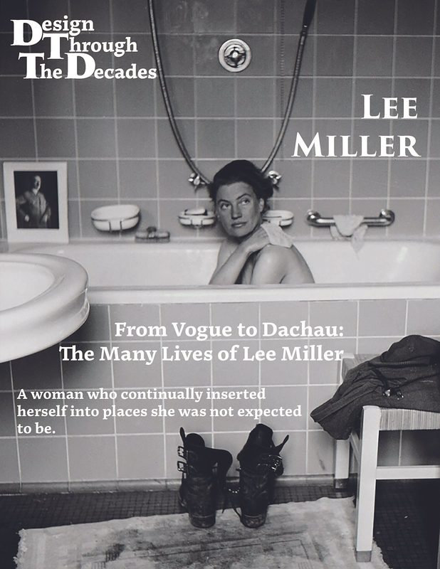

From Vogue to Dachau
The Many Lives of Lee Miller
This project translated my research on Lee Miller into a fully designed, publication-ready magazine that demonstrated editorial structure, typographic discipline, and visual hierarchy. The process began by organizing the written content into a clear narrative sequence and developing a custom typographic logo through hand-tracing and vector refinement. I established a controlled type system using proportional scales and a consistent heading–body pairing, which set the foundation for layout decisions across all spreads.
The magazine’s visual architecture relied on rigorous grid systems—column, modular, hierarchical, and manuscript—each chosen based on the content of the spread. I balanced text, imagery, captions, and white space while maintaining APA accuracy and brand consistency. After integrating high-resolution images, refining pacing, and applying disciplined alignment, I packaged the full InDesign project and produced a polished, print-ready publication that showcases a complete editorial workflow from research to final layout.